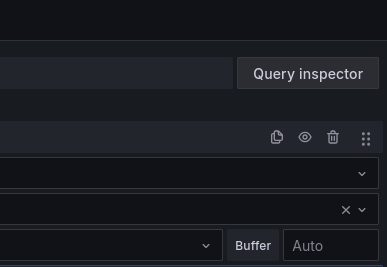
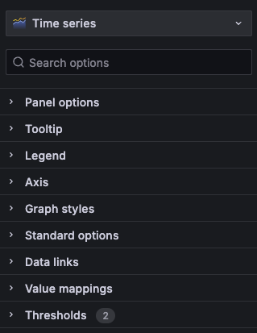
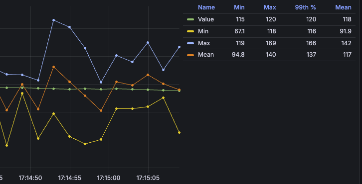

Mon premier dashboard
Estimated time to read: 5 minutes
Nous allons maintenant manipuler un dashboard pour ajouter des widgets et avoir quelques visualisations.

Pour le moment, nous allons commencer par un dashboard vide.

Via le menu Dashboard
Il est aussi possible de passer par le menu dashboard.
Il est alors possible de créer des répertoires pour organiser vos dashboards.
üîê Ces r√©pertoires sont aussi utilis√©s pour donner des droits d'acc√®s √† des utilisateurs ou des √©quipes.
Sélection de la datasource par défaut
On peut démarrer et choisir de créer une première "visualization" en cliquant sur Add visualization.
La première étape est de choisir une source de données pour notre dashboard. ℹ️ Elle peut être modifiée plus tard

Dans un premier temps, nous allons choisir une data source particulière, une source de données Mock intégrée à Grafana :

C'est une source de données qui génère des données aléatoires pour les métriques, les logs et les traces. Cela permet de tester les fonctionnalités de Grafana sans avoir à configurer une source de données réelle.
Elle nous permettra de voir comment fonctionne Grafana et de créer des visualisations de base.
Visualization : la brique de base du dashboard
On arrive directement sur la création d'un panel de visualisation. Ils sont tous présentés de la même manière:

- Au centre, la visualisation
- En bas, les configurations des données
- À droite, les options de rendu.
ℹ️ Si vous n'avez pas de données affichées, il suffit de cliquer sur Refresh
Les différents types de visualisation
On peut changer les types de représentation en sélectionnant le type de visualisation dans le menu déroulant disponible en cliquant sur Time Series en haut du bandeau de configuration des options de rendu.

La partie Suggestion propose des visualisations en fonction des données que vous avez.

Success
Cliquez sur plusieurs d'entre elles pour voir les modifications s'afficher en temps réel dans la visualisation.
La zone de sélection temporelle
Une fois son modèle d'affichage sélectionné, on veut pouvoir choisir la période temporelle qui nous intéresse.
Grafana est prévu pour afficher des données temporelles, c'est-à-dire qu'il va prendre en compte nativement la date associée à chacune de vos données.
Il est alors possible de filtrer pour ne voir les données que sur une période donnée.

Il est aussi possible de changer le range directement en sélectionnant la période souhaitée sur le graphique avec la souris.

Le menu de sélection propose différentes plages de temps préconfigurées et il est aussi possible de définir une plage de temps personnalisée.

Par défaut, le rafraîchissement des données est automatique, mais vous pouvez définir une fréquence de rafraîchissement via le menu disponible via Refresh.
Success
Faites le test en modifiant pour avoir un rafraîchissement toutes les 5secondes et voir le graphique se mettre à jour automatiquement.
Inspection du widget
Il y a un menu de configuration sur chaque widget

Notamment la partie Inspect qui est bien pratique :

Via Inspect, vous pouvez voir:
- les données brutes
- la requête effectuée pour récupérer les données
- le JSON de configuration du panel de visualisation
Ce panel d'informations est aussi accessible via le bouton Query Inspector :

Elle permet de voir les données utilisées pour le widget, ainsi que la requête (variable, on y reviendra plus tard) qui a été faite pour les obtenir.
Queries
En dessous de la visualisation, un onglet Queries est disponible.
Cela permet de configurer les requêtes qui seront utilisées pour récupérer les données à afficher.
Changez la query pour avoir le paramétrage suivant

On a alors plusieurs séries de données qui s'affichent.
Formulaire query
Dans les versions récentes de Grafana, on retrouve un mode Builder qui permet de construire la requête à l'aide d'un formulaire.
On est guidé dans la construction de la requête. Le formulaire s'adapte à chaque type de requête (PromQL, SQL ...). C'est souvent pratique pour débuter et pour déboguer une requête.
Le mode Code permet de voir la requête. C'est souvent plus rapide pour modifier une requête.
Transformations
A coté de l'onglet Queries, il y a un onglet Transformations.
Les transformations permettent de modifier les données avant de les afficher.

Il est possible de faire des transformations sur les données quelle que soit la source de données.
Info
Ces transformations sont réalisées par Grafana, elles ne modifient pas les données dans la source de données.
C'est particulièrement utile pour les données qui ne sont pas prévues pour être facilement affichées. On peut alors extraire certaines informations, les convertir, les filtrer, les regrouper, etc.
Success
Testez d'ajouter une transformation qui fait la somme de toutes les valeurs affichées.
Les options communes à tous les widgets

Panel Options
- Le titre
- La description
- Les r√©p√©titions (on a un chapitre d√©di√© üòâ)
Tooltip
Il est possible d'afficher les infos détaillées en passant la souris sur le graph.
Success
Testez les différents modes pour voir la différence.
Legend
Les légendes sont pratiques pour afficher rapidement les extrêmes / moyennes de vos données.
Success
Configurer la légende pour obtenir le résultat suivant : 
Axis
Permet de régler les axes du graphique, les unités, les échelles, etc.
Success
Passez votre graph en mode logarithmique par exemple.
Graph Style
Ici, on retrouve les configurations spécifiques à chaque type de visualisation.
Standard Options
Permettent de configurer les unités de grandeur.
On peut aussi choisir les couleurs d'affichage en fonction de la valeur des données (100°C en rouge par exemple et 0°C en bleu).
Les Data Links
Ils permettent de faire des liens vers d'autres dashboards / visualizations / URL externes et peuvent utiliser des placeholders pour passer les valeurs courantes.
Les Thresholds
Sans trop de surprise, ils permettent de définir des seuils et de leur associer une couleur particulière. Ils peuvent être définis de manière absolue ou relative (en %) et s'adapter aux valeurs affichées.
(Advanced) Fields Override
Ils permettent de changer tout ou partie de la configuration du widget en fonction de la valeur des données.
Sauvegarde du dashboard
On va enfin pouvoir sauvegarder notre dashboard.

Ça y est, nous avons notre premier dashboard avec un seul widget. Nous allons maintenant pouvoir en ajouter d'autres.
üõ´ Prochaine √©tape : Configurer une sources de donn√©es SQL ‚û°Ô∏è